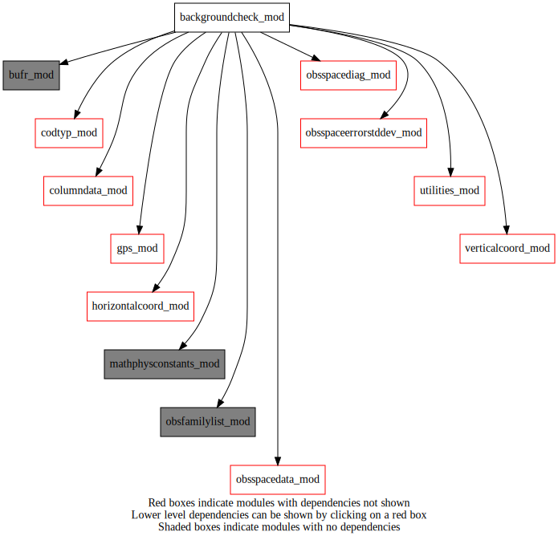
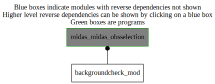

Dependency Diagrams:
 Direct Dependency Diagram¶
 Reverse Dependency Diagram¶
Description
MODULE backgroundCheck_mod (prefix=’bgck’ category=’1. High-level functionality’)
- Purpose
Performs the background check on all conventional observations
Quick access
- Routines
Needed modules
mathphysconstants_mod: MODULE MathPhysConstants_mod (prefix=’mpc’ category=’8. Low-level utilities and constants’)
bufr_mod: MODULE bufr_mod (prefix=’bufr’ category=’8. Low-level utilities and constants’)
obsspacedata_mod: MODULE obsSpaceData_mod (prefix=’obs’ category=’6. High-level data objects’)
gps_mod: MODULE gps_mod (prefix=’gps’ category=’5. Observation operators’)
utilities_mod: MODULE utilities_mod (prefix=’utl’ category=’8. Low-level utilities and constants’)
columndata_mod: MODULE columnData_mod (prefix=’col’ category=’6. High-level data objects’)
obsspacediag_mod: MODULE obsSpaceDiag_mod (prefix=”osd” category=’1. High-level functionality’)
verticalcoord_mod: MODULE verticalcoord (prefix=’vco’ category=’7. Low-level data objects’)
horizontalcoord_mod: MODULE HorizontalCoord_mod (prefix=’hco’ category=’7. Low-level data objects’)
obsspaceerrorstddev_mod: MODULE obsSpaceErrorStdDev_mod (prefix=’ose’ category=’1. High-level functionality’)
obsfamilylist_mod: MODULE varNameList (prefix=’ofl’ category=’7. Low-level data objects’)
codtyp_mod: MODULE codtyp_mod (prefix=’codtyp’ category=’8. Low-level utilities and constants’)Variables
Subroutines and functions
- subroutine backgroundcheck_mod/bgck_bgcheck_conv(columntrlonanlinclev, columntrlontrllev, hco_anl, obsspacedata)¶
- Purpose
Do background check on all conventional observations
- Arguments
columntrlonanlinclev [struct_columndata ,inout] :: column data on analysis levels
columntrlontrllev [struct_columndata ,inout] :: column data on trial levels
hco_anl [struct_hco ,in,pointer] :: horizontal grid structure
obsspacedata [struct_obs ,inout] :: Observation-related data
- Called from
- Call to
obs_famexist(),utl_tmg_start(),ose_computestddev(),bgck_data(),bgck_gpsro(),osd_obsspacediag(),utl_tmg_stop()
- subroutine backgroundcheck_mod/bgck_data(obsfamily, obsdata, new_bgck_sw)¶
- Purpose
Calculate a background check for a data family and set the appropriate quality-control flags in obsSpaceData
- Arguments
obsfamily [character ,in] :: current observation family
obsdata [struct_obs ,inout] :: obsSpaceData
new_bgck_sw [logical ,in]
- Called from
- Call to
obs_getheaderindex(),obs_elem_c(),obs_bodyelem_i(),obs_bodyelem_r(),obs_headelem_r(),utl_abort(),obs_headelem_i(),isetflag(),obs_bodyset_i(),obs_headset_i()
- subroutine backgroundcheck_mod/bgck_gpsro(columntrlontrllev, obsdata)¶
- Purpose
Set background-check flag on GPSRO data if ABS(O-P)/P is too large
- Arguments
columntrlontrllev [struct_columndata ]
obsdata [struct_obs ]
- Called from
- Call to
col_getvco(),col_getnumlev(),obs_getheaderindex(),obs_headelem_i(),gps_iprofile_from_index(),obs_headelem_r(),obs_bodyelem_i(),obs_bodyelem_r(),obs_bodyset_i()
- function backgroundcheck_mod/isetflag(obsfamily, kodtyp, kvnam, zbgchk)¶
- Purpose
Set BACKGROUND-CHECK FLAGS According to values set in a table. Original values in table come from ecmwf.
- Arguments
obsfamily [character ] :: FAMILY NAME ( ‘UA’ , ‘AI’ …etc.. )
kodtyp [integer ] :: BURP CODE TYPE
kvnam [integer ] :: VARIABLE NAME ( BURP )
zbgchk [real ] :: NORMALIZED BACKGROUND DEPARTURE
- Return
isetflag [integer ]
- Called from
{kind=link}
{kind=link}